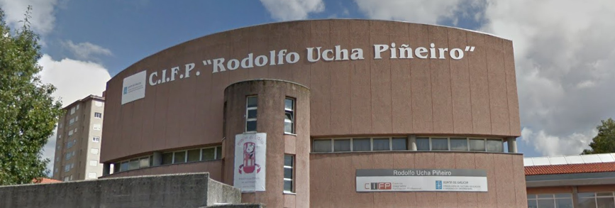

UchaTech es un proyecto web realizado por los alumnos del segundo año de DAW del CIFP Rodolfo Ucha. Nuestro objetivo es el de proporcionar tutoriales de Scratch amenos y divertidos con temática de ahorro energético para que podamos aprender mientras nos concienciamos sobre el cuidado del medio ambiente. Actualmente estamos en fase de desarrollo, por lo que en el momento en el que escribimos esto aún no tenemos todas nuestras funcionalidades disponibles. Si estás atent@ a nuestro blog estarás al tanto de nuestras novedades y del lanzamiento de nuestra primera versión  , ¡te esperamos!
, ¡te esperamos!